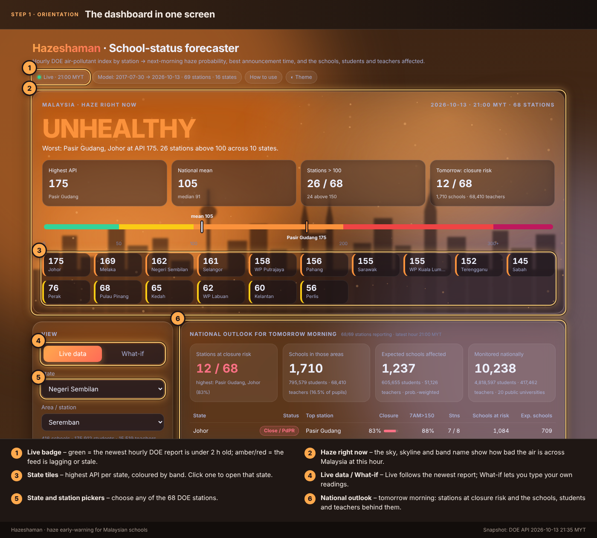
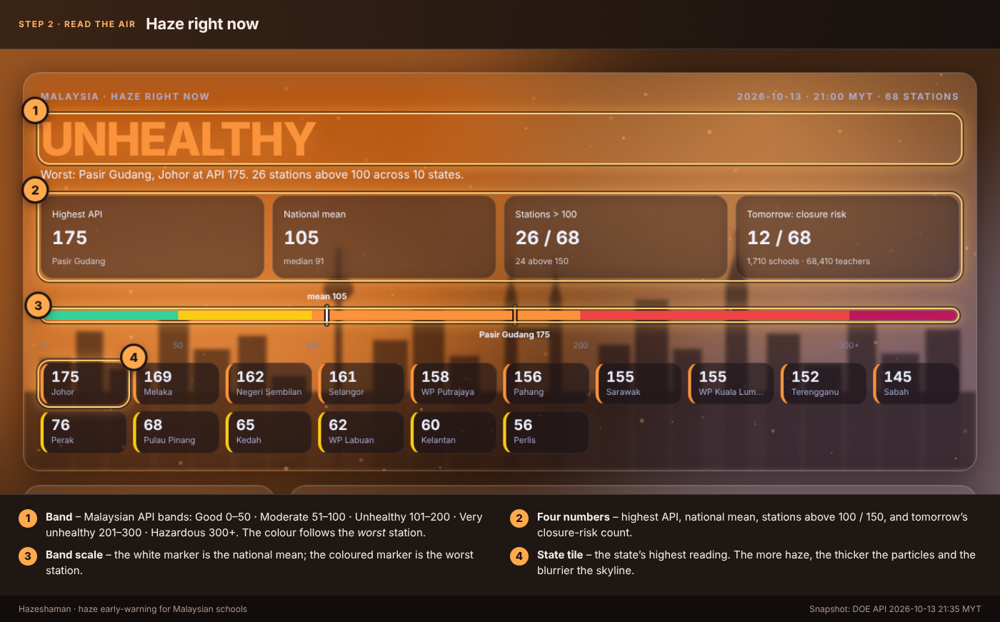
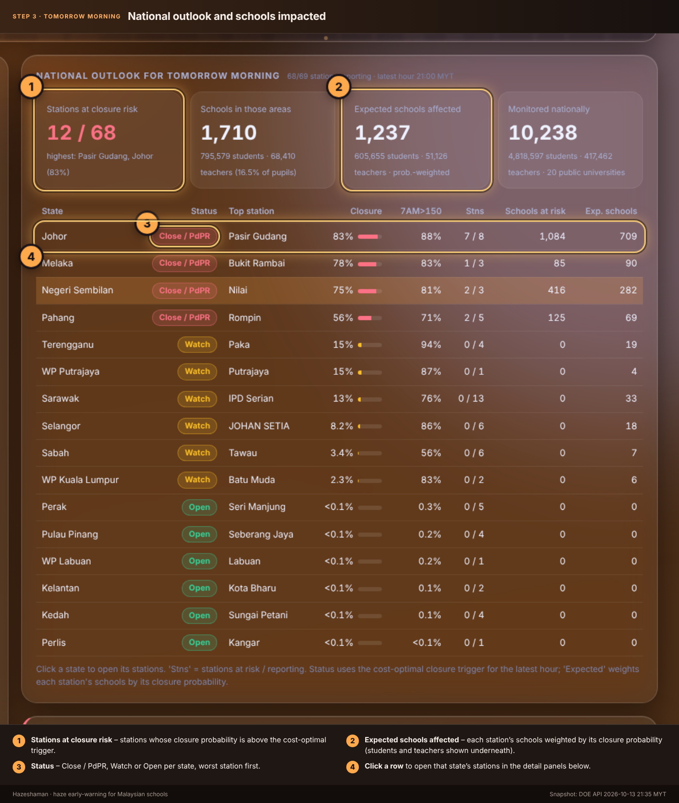
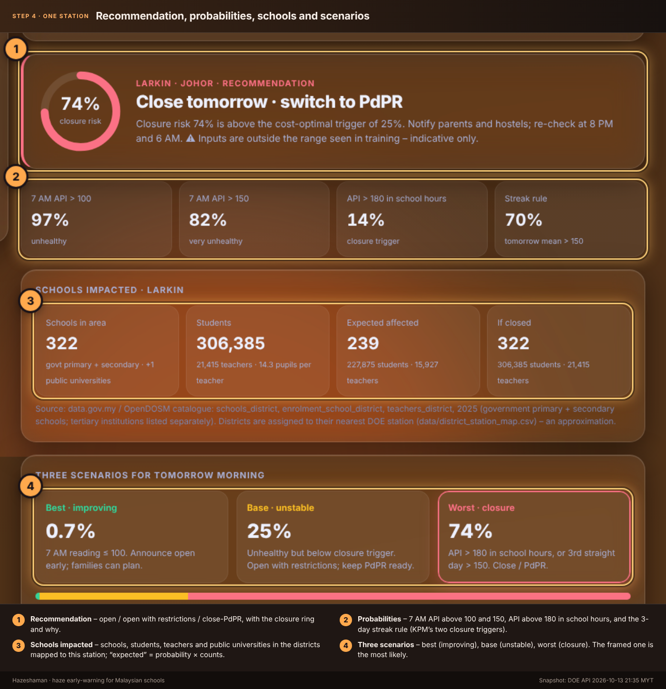
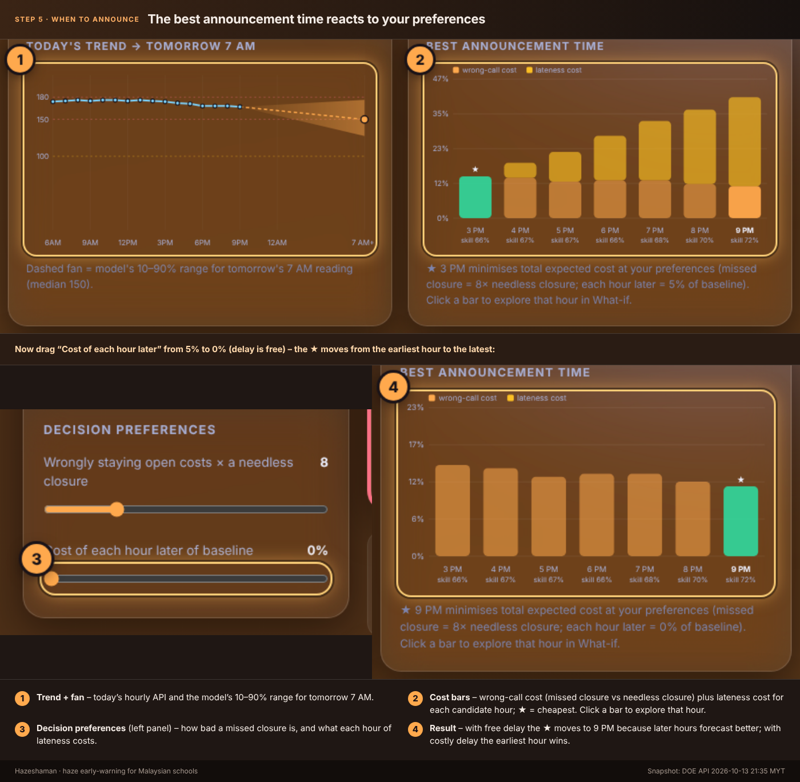
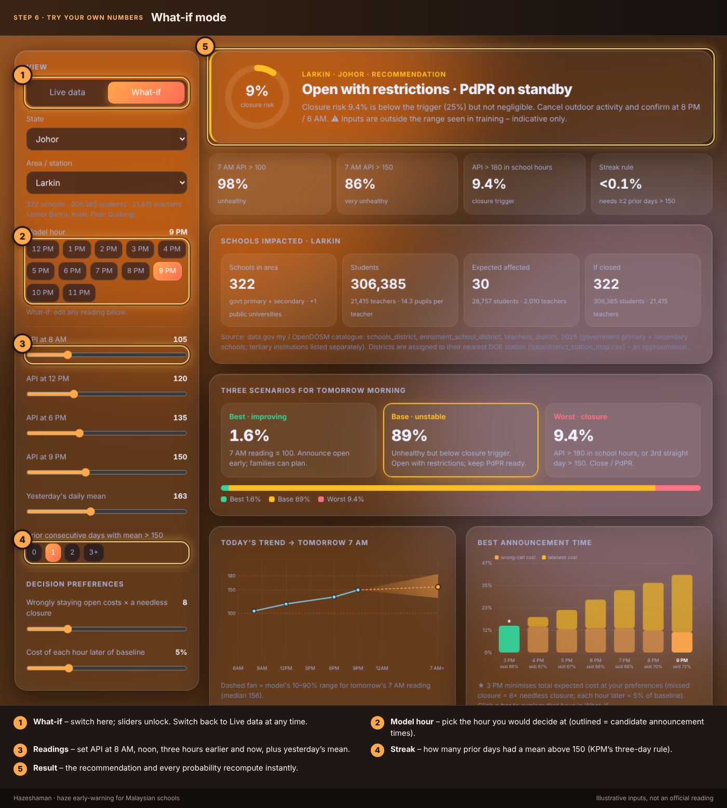
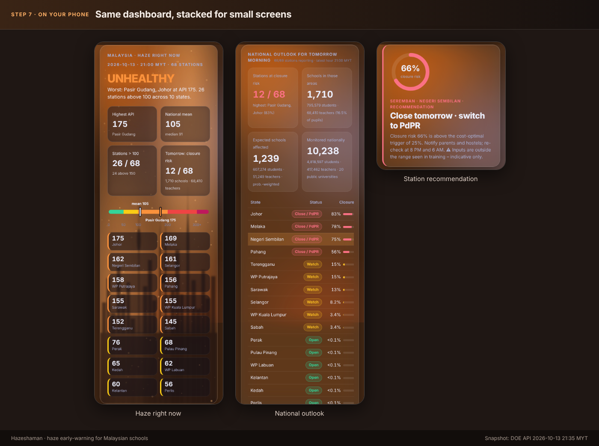

Hazeshaman · how to use the dashboard
A haze early-warning view for Malaysian schools: the air right now, the chance schools must close tomorrow morning, the best time to announce it, and the schools, students and teachers affected. Seven steps, each with a numbered screenshot.


1Orientation
Check the live badge first (green = newest hourly DOE report is under 2 hours old). Then read the sky, pick a state tile, and use the picker to choose a station.

2Read the air
The band follows the worst station using Malaysia’s API bands. The skyline blurs and the particles thicken as haze worsens.

3Tomorrow morning, nationally
See how many stations are above the cost-optimal closure trigger and how many schools, students and teachers sit behind them. Click a state row to drill in.

4One station
The recommendation, KPM’s two triggers (API above 180, or above 150 for three days), schools impacted and the best / base / worst scenarios.

5When to announce
Waiting improves the forecast, but late calls cost families. Set how bad a missed closure is and what each hour of delay costs; the ★ shows the cheapest hour.

6Try your own numbers
Switch to What-if, pick a model hour and type the readings you expect. Everything recomputes instantly.

7On your phone
The same panels stack for small screens; the state table keeps the essential columns.
